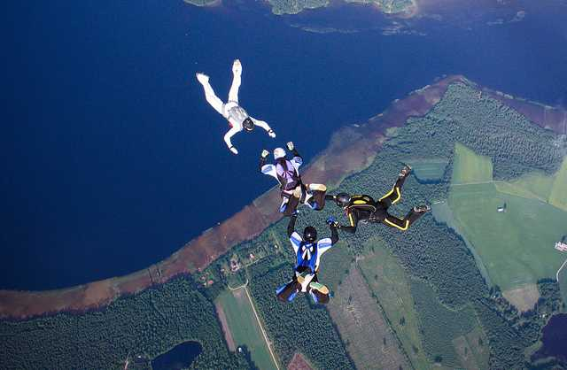

General details about skydiving
The parachute is an adjustable device designed to slow down the movement of a body through the atmosphere using air friction.
Parachutes are usually used to slow down a person or object from falling through the air until
the speed of descent no longer endangers the life of that person or the integrity of the object. Also parachutes
are used to slow down the horizontal movement of a vehicle (aircraft or space shuttle) on landing.
Skydiving is part of the category of dangerous sports, for the practice of which it is necessary to obtain
a patent, following courses on theoretical and practical training. Even folding a parachute requires assimilation
knowledge. Faulty folding, but also incorrect handling during the fall, can lead to accidents,
often fatal.
The first account of a parachute dates from 2258-2208 BC, when, in a Chinese manuscript,
the escape of Sun, the emperor of China, from a high tower with the help of two parachutes, with which
it reaches the ground easily without injury. Therefore, Emperor Sun can be considered the first parachutist in history.
The first parachutes in Romania
The first classic parachutes appeared in Romania were made in France.
With these parachutes, four Romanian aviators were saved in 1917: Bădărău, Secărescu, Mihalcea and Kally.
Many Romanian inventors thought of building their own parachute. The first was Marcel T.D.
Juvara, in 1916, then Grigorescu and Sziklay Ioan, in 1923. But the Romanian aviation was eventually equipped with German parachutes.
Until 1931 the history of parachutes is related to the flight of airplanes: aviators are often saved
parachuting from endangered planes or falling victim to weather parachutes. This is how it is saved
Captain Gheorghe Banciulescu, who would later become the first aviator to fly a plane
prostheses on both legs.
In 1931 the parachute began to be used in sports launches by Smaranda Brăescu,
who becomes the first person in the history of Romanian skydiving to set a world record for skydiving.
On October 2, 1931 Smaranda Brăescu jumps from 6000 meters altitude, near Slobozia, in Bărăgan, with immediate opening,
and breaks the women's world record for height, which was held by the American parachutist Smith. Six months later, on May 19, 1932,
in Sacramento, Smaranda Brăescu also broke the men's world record, setting a new absolute record of height, of 7233 meters.
Steps to skydive
Reservation and conditions
In order to be able to book a tandem jump, the following conditions must be observed at any club / aerodrome:
- Minimum age: 16 years, with the written consent of both parents, legalized by a notary. After 18 years, parental consent is no longer required.
- Good physical condition. It is important that there are no serious problems with the heart, ankles, feet. The maximum permissible passenger weight is 110 kg.
- Required documents: identity card.
- Recommended outfit: sportswear and footwear.
Arrival at the airport
Once you arrive at the aerodrome, you will fill in the membership form and you will be able to choose in addition to the simple jump (included in the membership fee - link to contributions), photos / filming or filming and photos for it.
Depending on your choice, a cameraman will film / photograph you throughout the jump (from the ground to the last impression after landing).
The flight
The plane will climb to 4000 m in about 15 minutes, during which time you can enjoy the wonderful view above which you will fly.
Jumping from the plane
Once the plane door is opened, the instructor will position you on the edge with your feet out so that you can make the jump. Throughout the jump you will be closely connected to the instructor
(which is always on top), so all you have to do is enjoy the unique experience and admire the landscape.
The free fall
You will enjoy the free fall for 1 minute and you will reach a speed of about 200km / h.
Opening the parachute
At an altitude of 1500 meters, the instructor will open the parachute and from here you will float in the air for 6 to 10 minutes.
Friends will be waiting for you to share their experience.
Longest Indoor Freefall Record Set
The longest indoor freefall Guinness World Record has been jointly achieved by two Russian adventurers, Viktor Kozlov and Sergey Dmitriyev,
in the city of Perm on Tuesday, 10 July 2018. The record took place at the innovative FreeFly Technology wind tunnel.
The skydivers flew uninterrupted for 8 hours, 33 minutes and 43 seconds to beat the record of indoor freefall set before.
The result was made official by a representative of the Guinness World Records Association.
This unprecedented record has been captured in a short video produced by the FreeFLy Technology team.
//PAGINA2
Locations - Romania
In Romania there are several locations where you can book parachute jumps. The largest are the following:
Within TNT-brothers you can perform jumps in 2 locations: Dropzone Clinceni and Dropzone Tuzla.
TNT Brothers, a sports association brought to life by the passion for skydiving, maintained and raised with the love for flight of its members. The largest skydiving association
from Romania and one of the largest in SE Europe, with approximately 57,000 solo launches, 14,000 TANDEM launches, and 300 students since its inception.
They have instructors such as Dragos Boeru (Master Rigger with over 5,400 jumps) and Ramiro Nicolau (Tandem Instructor with over 11,000 jumps).
We have a team of professionals with great experience in skydiving that consists of parachuting instructors that have been or are still active in the Romanian Aeroclub.
arachute jumps are performed from a height of 3000 m (10000 feets) from a Cessna 182 plane, from the private aerodrome Piatra Craiului.
Some instructors from ComeFly would be: Catalin Balascau (former instructor from the Romanian Aeroclub with over 2000 jumps) and Cristinel Popescu (skydiving instructor with over 4000 jumps).
It all started in 2017 with a small experimental project initiated by us, Andreea (parachutist) and Ben (pilot), through which we set out to support the promotion and
the development of aeronautical activities in Romania, to bring the communities of pilots and paratroopers together as often as possible and to learn from each other constructively.
This is how BENZOI was born, the first private initiative of its kind in the region.
For this we created an aeronautical sports club (Benzoi Sports Club Association) and an online presentation and booking platform (Benzoi Aviation SRL).
Part of the team from Benzoi consists of: Mihai (tandem instructor with over 1500 jumps) and Cristi (cameraman with over 3000 jumps).
At GoJump, our staff and instructors are ready to make your first parachute adventure, as safe as possible and an extraordinary experience.
We know that jumping off a plane for the first time can seem a little intimidating, so we strive to create a fun learning environment for you,
pleasant and positive, giving you the highest level of attention.
The GoJump team consists of many wrestlers including: Brian Dyas (parachuting instructor with over 6500 jumps) and Sabau Stefan (pilot with over 4000 flight hours).
Optionally, at Skydiving Center you can benefit from filming - photography services. Share the fun with friends and family and relive the first leap every time you watch movies or photos
unique during the jump. Our cameramen are professionals in the art of photography and filming, and with the help of cameras mounted on headphones they will be in free fall next to you to film the unique moment.
of free fall. After landing, in just 30 minutes, you will be able to take possession of your CD / DVD, or you will receive the filming and photos by e-mail.
Some members of the Skydiving Center team: Dan Grigore (Senior Rigger), Dorel Iacob (instructor and cameraman) and Marius Rosu (instructor and cameraman).
We are a team of professionals specialized in paragliding and tandem flight training. We have been operating since 2006, we love what we do and we want to share with others the joy of paragliding.
Our goal is to offer you a unique experience, in absolute safety.
The team consists of a multitude of instructors and sports pilots, including: Gyorgy Robert (paragliding instructor who flew with over 3000 passengers) and Pochiu Adrian (tandem instructor, who in 2011 flew with a paramanta designed by him).
Parasutism International
Here will be presented the most interesting locations where you can skydive.
Mount Everest, Nepal
Cost per person: USD 290
Location: Sagamartha National Park Best Time to Skydive: May to August

Palm Jumeirah, Dubai
Cost per person: USD 530
Al Sufouh Best Time to Skydive: October to March

Fox Glacier, New Zealand
Cost per person: USD 200
Location: Cook Flat Rd, Fox Glacier
Best Time to Skydive: December to February

Hawaii, USA
Cost per person: USD 250
Location: Farrington Hwy, Waialua
Best Time to Skydive: May to October

Interlaken, Switzerland
Cost per person: USD 420
Location: Mittelweg, Wilderswil
Best Time to Skydive: June to September

North Wollongong Beach, Sydney, Australia
Cost per person: USD 250
Location: Australia Park
Best Time to Skydive: December to February

Skydive Snohomish, Washington, USA
Cost per person: Starts at USD 230
Location: Airport Way, Snohomish
Best Time to Skydive: May to October

Pattaya, Thailand
Cost per person: USD 300
Location: Sriracha, Pattaya, Chon Buri
Best Time to Skydive: November to February

he Grand Canyon, USA
Cost per person: USD 220-USD 430
Best Time to Skydive: May to October

Victoria Falls, Zambia, Africa
Cost per person: USD 230 – USD 305
Location: Livingstone
Best Time to Skydive: November to March

Denarau Island, Fiji
Cost per person: USD 250
Location: Nadi
Best Time to Skydive: November to April

Santa Barbara, California
Cost per person: USD 200
Location: 25001 Kasson Rd, Tracy, CA 95304, USA
Best Time to Skydive: May to October

More inc
Atention!!Do not go skydiving if you have any severe medical problems.
Safety Tips to keep in mind:
1.Get your Body Right!

You don’t need to be physically fit to go skydiving, but it can be really helpful to do a few warm up exercises and stretches
to get your body and muscles feeling loose. Remember, you’ll be freefalling at more than 120mph (190kph), so it’s important that
your body is completely relaxed while in the air. Do some jumping jacks or run in place on the morning of your jump; and don’t
forget to do some simple stretches, especially for your neck . If you have any medical conditions, consult
with your physician before attempting any skydive.
2. It’s All in the Mind

You’re jumping OUT of a plane! Okay, now that the elephant has been addressed, feel free to relax now. I know it’s easier said
than done, but you’re paying for an unforgettable experience, so you should definitely enjoy every penny of it. It’s always a
good idea to educate yourself on skydiving by watching videos or reading articles about it, but try not to focus and overreact
to any negative headlines and psyche yourself out in the process (see point 5 below). If you still feel uneasy on the day of your
jump, try some meditation to help rest and relax your emotions and steady your mind.
3. Take it Easy and Breathe

This may sound unusual, but knowing how to breathe correctly is important when you’re up in the air. Avoid hyperventilation by taking
deep, slow breaths instead of short, quick successive breathes. Stay calm, relax and listen to your instructor who shall no doubt
walk you through this like a pro; and if you feel the slightest bit uneasy, be sure to let him or her know about it. Despite what you
may think, breathing is not difficult and should be able to breathe like normal, as if you were on the ground. If you do experience any
difficulty in breathing, it’s probably because you’re head is tilted too low causing the wind to rush at your face and into your nose at
an odd angle. But there’s no need to panic, just tilt your head back, keep your eyes aimed towards the horizon and breathe through your
mouth if necessary.
4. Be Like the Banana, My Friend

As I was being fitted for my harness, my instructor calmly pointed to an adjacent wall, where a photo of a banana, juxtaposed next to a
skydiver, could be found. “Today, my friend,” he coolly remarked. “You’re favorite fruit will be a banana.” In other words, your body
should mimic the shape of a banana when you’re in mid-air, which means that your head should be tilted back, eyes looking straight ahead
towards the horizon, back arched, arms comfortably extended to the sides, and legs relaxed with the soles of your feet aimed up towards the sky.
5. Don’t Believe the Hype!

More than likely you’ll be jumping at around 13,000 feet (3,962 meters), and understandably it can look and feel terrifying to
peer through the airplane window to the ground below. But despite the sensational headlines you may have read, skydiving is actually
very safe. According to the United States Parachute Association (USPA), out of the estimated 3.2 million annual skydive jumps that occurred
in the United States in 2014, there have been 24 fatalities reported (that’s eight deaths per one million jumps).In other words, if you can
accept the risk of driving your car to work every day or taking a flight to that long-awaited vacation spot, then why shouldn’t you go skydiving?
6. Enjoy the Morbid (and Hilarious) Sense of Humor of Skydivers

What’s the hardest part about skydiving? (The ground.)
No one has ever complained of a parachute not opening.
You don’t need a parachute to skydive. You need a parachute to skydive twice.
You know, there’s something oddly reassuring about a group of skydivers who are only half-joking about death. But, to be honest, I feel that’s
a good thing, since I’m sure many first-time jumpers will naturally feel a tinge of anxiety before a jump. And there’s no better way to offset
the potential angst of a nerve-wracking experience than with a healthy dose of laughter.
7. Safety is Paramount

Don’t ever mistake the relaxed personality of your instructor or his slew of witty jokes (though you should admit it’s a great ice breaker)
as a sign of carelessness, because safety is absolutely paramount above all else. These guys and girls are consummate professionals who do
this as their JOB every single day (In fact, my instructor was scheduled to do seven jumps that day!) All skydiving instructors must be certified
with a class D license and have completed at least 500 total jumps. Go online and check to see if the credentials of your skydiving company and
instructor are properly certified.
8. What to Bring

Wear loose, but comfortable clothing, such as a T-shirt, pants and sneakers. It may feel a slight chilly up there but when you leap out of
the plane your adrenaline will no doubt kick in and the cold won’t affect you, so a jacket or hoodie won’t be necessary. Bring cash
to buy some food or drink, photo/video package (you’ll definitely want to remember you’re first jump with a video, trust me), and some
money to leave a tip for your instructor. The earlier in the day you arrive the less time you’ll need to wait around, but feel free to bring
some playing cards or chat with your fellow skydivers to occupy your time.
9. How Does it Really Feel to Fall Through the Sky?

Absolutely amazing! That’s the short answer, but nothing can quite prepare you for the moment when you finally muster the courage to peer
over edge of the opened fuselage door, leap out of a plane at 13,000 feet and free fall at more than 120mph through the sky. It’s
terrifying yet exciting at the same time, especially knowing that the only thing stopping you from attempting a second jump is the singular
hope that your instructor properly packed your parachute that morning (by the way, all instructors, and obviously mine included, are required
to inspect each pack before going up).
For those brief 60 seconds that you’re in free fall, it oddly feels that you’re suspended in mid-air because there’s nothing in your
immediate surroundings to help properly gauge just how fast you’re truly falling. It almost feels like you’ve fallen in a gigantic pool
of quicksand, filled only with high-speed wind and slowly sinking towards the ground (albeit at 176 feet per second!).
Click here for a tutorial video.
Most asked questions:
Is tandem skydiving safe?
Skydiving is an extreme sport – with it comes some level of risk, so there are no guarantees. However the entire sport of skydiving is centered
around safety and takes safety into consideration first and foremost.
What is physically required to tandem skydive?
Although older age isn’t a factor, physical health is. After all – good physical health is a plus in any sport. If you are taking prescription
drugs for an illness, you are required to have a doctor’s certificate stating that no adverse effects will result from you making a parachute jump.
Over the years, we’ve even introduced tandem skydiving to paraplegic and quadriplegic students, so the limits might surprise you. Not sure? Call and ask!
Will I get that falling feeling? Or that “stomach drop” feeling?
There is no sudden drop feeling associated with freefall. The feeling is not what you would expect — it’s not like on a roller coaster. Since the plane
you are in is moving forward in excess of 100mph, the
horizontal movement of the plane creates a cushion of air when you jump out that supports your body and makes it feel like you are flying (as opposed to falling).
Can I eat or drink anything before skydiving?
Light meals are recommended before your skydive! Try to avoid a lot of caffeine. People under the influence of alcohol or drugs will not be allowed to jump.
What if the parachute doesn’t open?
This is definitely one of the most common questions that we hear quite often! Overall, it is extremely rare that a parachute has a malfunction of some kind.
As we’ve mentioned, the sport of skydiving is centered around safety. Per the FAA (Federal Aviation Administration), all skydiving parachute rigs are
equipped with a main parachute (primary chute) and a reserve parachute (secondary chute). There is also a device in the parachute container called an
Automatic Activation Device (AAD) which is designed to deploy the reserve parachute if it senses a skydiver(s) is still in freefall at a certain altitude.
All parachutes are packed and maintained according to the standards of the FAA and parachute manufacturers.
Are there weight restrictions to tandem skydive? Why?
There are certain restrictions for guests that weigh over 200 lbs. There are several factors taken into consideration in this instance. Most notably,
the equipment manufacturer defines the limits for the gear use, which includes the total weight of the tandem pair. Also depending on wind conditions,
we need to ensure the instructor you are paired with is set up to land the tandem canopy safely.